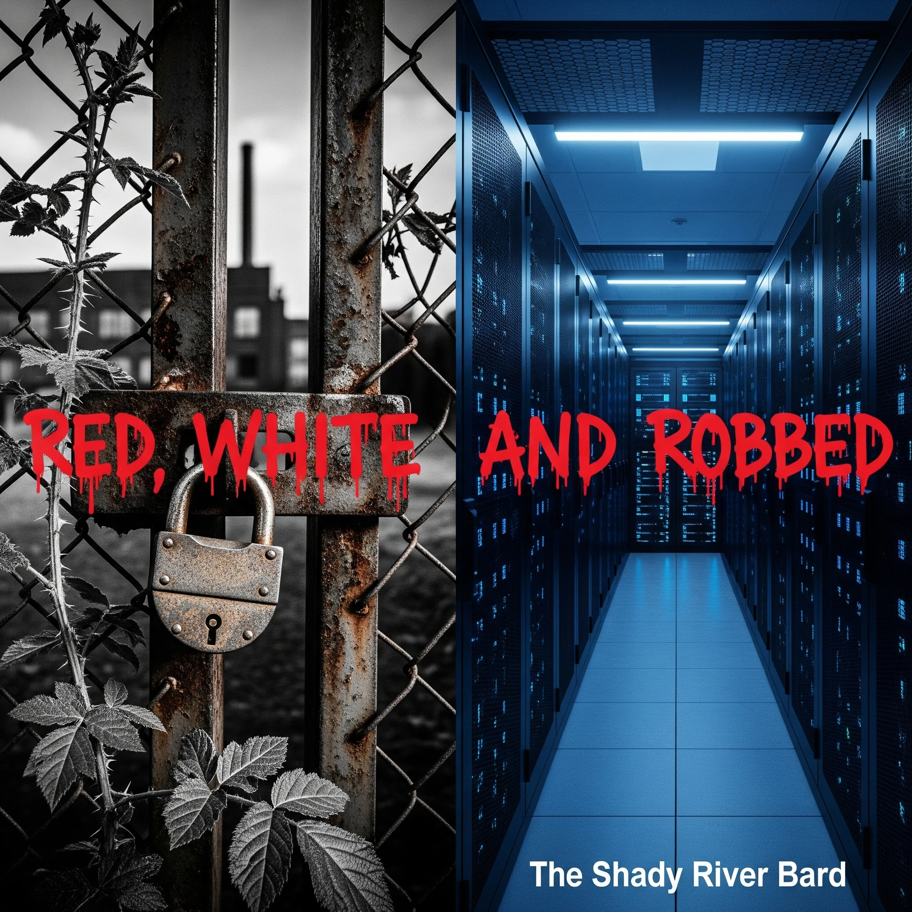

RED, WHITE, AND ROBBED
An epic, 18-track sonic chronicle tracing eighty years of American labor arbitrage. From the post-war foundry floors of the Treaty of Detroit, through the padlocked gates and “Learn to Code” fictions of the Rust Belt, to the algorithmic slaughter of the white-collar recession—Red, White, and Robbed unites the steelworker and the software engineer in their shared disposability before capital.

The Arbitrage Jukebox
Listen to the complete 18-track cycle with synchronized clean literary lyrics, socioeconomic theory, and narrative analysis.
1. The Arsenal
The Treaty of Detroit (1950) established the post-war industrial social contract: guaranteed wage increases indexed to productivity and cost-of-living, health benefits, and pensions in exchange for labor peace.
This song serves as the lyrical overture for Act I: The Promise (1945–1970). It captures the supreme confidence of post-war American industry.
Thematic Exhibits: The Mechanics of Arbitrage
Explore the four historical milestones that dismantled the American worker's security over eighty years.
The Treaty of Detroit & The Old Deal
In 1950, the United Auto Workers (UAW) and General Motors signed the historic “Treaty of Detroit.” In exchange for labor stability and a management monopoly over shop-floor discipline, workers received guaranteed annual wage increases tied to productivity, cost-of-living allowances (COLA), employer-paid healthcare, and defined-benefit pensions. For thirty years, this formula allowed a single manufacturing earner without higher education to own a suburban home, purchase an automobile, support a family, and guarantee generational upward mobility.
The Labor Arbitrage Matrix
Comparing the four historic phases of worker disposability from the assembly line to the autonomous server room.
| Metric / Dimension | Act I: The Promise (1945–1970) | Act II: The Betrayal (1970–2000) | Act III: The Paper Life (2000–2020) | Act IV: The Slaughter (2025–Present) |
|---|---|---|---|---|
| Physical Environment | Blast furnace, assembly line, foundry | Padlocked gates, shuttered plants, TAA hall | Climate-controlled cubicle, open office, standing desk | Black Zoom screen, home bedroom, dark server farm |
| Social Contract | Treaty of Detroit, lifetime defined pension, COLA | Severance stipend, retraining voucher, bankruptcy | At-will contract, 401(k), vesting stock cliff | Muted Zoom call, non-disparagement NDA, captive training |
| Efficiency Metric | Pieces per hour, foundry tonnage | Quarterly EPS, stock buyback ratio, plant ROI | Agile 2-week velocity, Jira burn-down chart, pull requests | Algorithmic headcount reduction, token latency, API calls |
| Disposal Mechanism | Offshoring to non-union states / overseas | Trade Adjustment runaround, “Learn to Code” | Telemigration to Bangalore, global remote arbitrage | Single-Sign-On lockouts, H-1B replacement, LLM agents |
| Corporate Justification | “Meeting post-war allied obligations” | “Maximizing shareholder value (Friedman)” | “Global talent optimization & round-the-clock teams” | “Operational efficiency & AI-enabled restructuring” |
| Worker Realization | Broke body to buy son a life of the mind | Betrayed by the company and political establishment | Thought intellectual mind made them irreplaceable | Blue and white collar were only ever labor cost to capital |